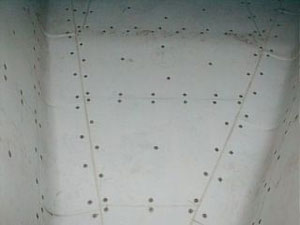

Technické a kluzné plastyKonstrukční plast BELTA® S
Špičkový polymerní materiál tvořený dlouhými uhlovodíkovými řetězci. Vyznačuje se mimořádnou rázovou houževnatostí, nulovou nasákavostí, samomazností a špičkovou odolností vůči kyselinám a louhům.
Materiál:
Ultravysokomolekulární polyethylen
Teplotní rozsah:
-200 °C až +80 °C
Tvrdost:
65 Shore D
Otěr / Pevnost:
Extrémní otěruvzdornost (Sand-slurry test 100)
- Minimální koeficient tření a samomazné vlastnosti
- Mimořádná odolnost proti rázům i při mrazu (-200 °C)
- Fyziologická nezávadnost pro přímý styk s potravinami